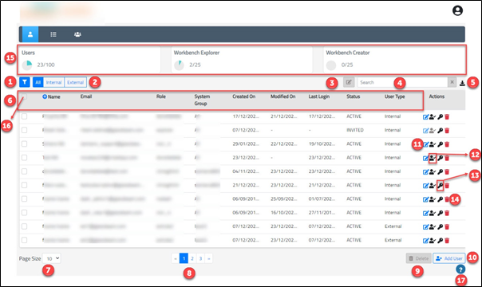
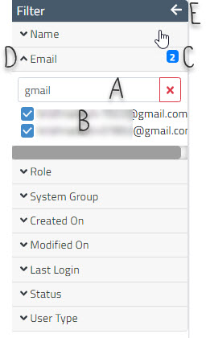

Users List
To know more about users, click here.

|
Number |
Description |
|
1 |
Click here to expand the filter. This filter helps in performing a specific search based on the following listed parameters. You can select/unselect the values of these parameters to search the users list.
This filter works in conjunction with the search annotated with 3. Example: 
|
|
2 |
Select from the following options:
All – Lists all the users – both Internal and External. Internal – Lists only internal users. External – Lists only external users. Note: On selecting Internal or External, the corresponding option is auto selected in the filter (annotated as 1) for the parameter Role Type. |
|
3 |
Click here to know more about bulk edit. |
|
4 |
Enter search criteria to search by the following parameters:
|
|
5 |
Click here to download the users list in the .csv (comma separated value) format. No filters (that are applied on the screen) are applicable to the list that is downloaded. Always the entire list of end customers will be downloaded. |
|
6 |
List of existing users with the following headers:
|
|
7 |
Select a suitable page size. The available page sizes are 10,20,30, and 50. By default, the page size is set to ten. Hence, by default, the number of users shown per page is ten. |
|
8 |
Use pagination to navigate between the pages of users list. Click on page numbers to navigate across pages of users list. Number of pages displayed depends on:
|
|
9 |
Click here to delete single/multiple selected users. Delete option is enabled only when one or more users are selected in the list. Note: All users except the user that is currently logged in can be selected for deletion. |
|
10 |
Click here to add a new user. Click here to know more. |
|
11 |
Click here to edit the respective user. Click here to know more. |
|
12 |
Click here to activate/inactivate user. Click here to know more. |
|
13 |
Click here to reset password. Click here to know more. |
|
14 |
Click here to delete the respective user. |
|
15 |
Displays all the licencing information. Click here to know more about licencing information. |
|
16 |
Click here to select all users in the list in the current page. To know more about select all, click here. |
|
17 |
Upon clicking, help icon provides option to enable On-Screen help. |
Created with the Personal Edition of HelpNDoc: Qt Help documentation made easy